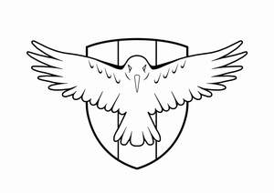

Trade Mark Journal No.2025/044 31 October 2025
UK00004281264 21 October 2025 (12,14,18,25,37,42)

- Class 12
- Vehicle chassis; Chassis (Vehicle -); Automobile chassis; Chassis (Automobile -); Chassis for vehicles; Chassis of vehicles; Chassis of automobiles; Chassis for automobiles; Chassis for motor vehicles; Motor vehicles (Chassis for -); Bodywork (Vehicle -); Motor car doors; Passenger motor cars; Vehicle wheels; Wheels (Vehicle -); Wheel rims for motor cars; Automobile wheels; Brakes for motor cars; Vehicle bumpers; Bumpers (Vehicle -); Steering wheels [vehicle parts]; Coachwork for motor vehicles; Motor vehicles (Coachwork for -); Motor cars for racing; Racing motor cars; Motor racing cars; Motor cars; Underbodies of vehicle; Passenger cars; Automobile steering wheels; Gearboxes for motor cars; Modular chassis systems for vehicles; Wheels for motor vehicles; Bonnets for vehicle engine; Bodywork parts for vehicles; Bodyworks for motor vehicles; Automobile bumpers; Passenger motor vehicles; Racing cars; Cars; Wheels [land vehicle parts].
- Class 14
- Keyrings; Lanyards for keys; Fobs for keys; Leather key fobs; Leather key rings.
- Class 18
- Luggage; Luggage bags; Travel luggage; Luggage, bags, wallets and other carriers.
- Class 25
- Jerseys [clothing]; T-shirts; Hats; Beanie hats; Baseball hats; Sports caps and hats; Caps [headwear].
- Class 37
- Maintenance and repair of chassis parts and bodies for vehicles.
- Class 42
- Design of motor vehicle parts.
Christopher Rudling